Introduction
Many games have more than one level or area in which the player is going to play, unless you're making a
card game or other similar setup. If you're making a deathmatch game then
you're already set - the default scripts will automatically cycle the mission
when a player gets the requisite score. If you're making a role-playing
game you might want to have other ways to get a player from one mission to the
next.
In this article we're going to cover mission cycling using triggers and spawn
points. This will let us pick a landing spot in the destination mission
file for our player based on which trigger was used.
Setting Up
We're going to start with a clean project, so open the Toolbox and create one
using the FPS Tutorial template. This will give us an assortment of
mission files to play in.

Name your new project MissionTriggers and select the FPS Tutorial template.
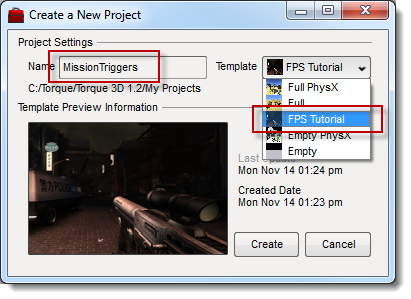
When the project has been created, select your new project (1), select the
ChinaTown_Day.mis mission (2) and open it in the World Editor
(3).
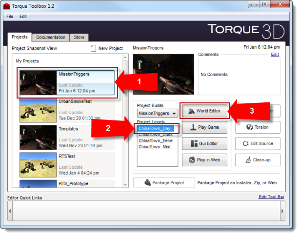
Create the New Trigger Datablock
When the mission loads start the Datablock Editor.
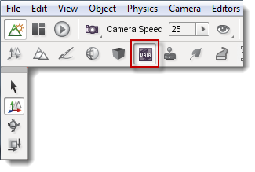
In the Datablock Library, select the New tab and scroll down to TriggerData.
Double-click TriggerData to create a new TriggerData datablock.
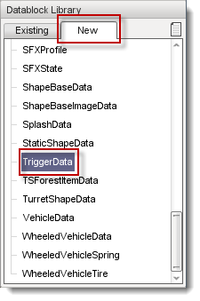
In the Create New Datablock dialog, name your datablock transitionTrigger
and click Create.
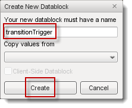
Save your new datablock, then save your mission file and close the editor.

The onEnterTrigger() Callback and Other Support Scripts
Now we need to script our new transitionTrigger's onEnterTrigger() callback to handle moving the player from the current
mission to the desired mission.
Open scripts/server/triggers.cs and add the following code to the end of the
file:
function transitionTrigger::onEnterTrigger(%this, %trigger, %obj)
{
// get the .mission dynamic field value of the activated trigger
// and assign it to the global variable $Server::TargetMission for use when
// loading the next mission file
$Server::TargetMission = %trigger.mission;
// get the .target dynamic field value of the activated trigger
// and assign it to the global variable $Server::TargetSpawn for use when
// spawning the player in the next mission
$Server::TargetSpawn = %trigger.target;
// call the function to cycle the mission. This shows the score screen and
// then flushes the current mission before loading the next one.
cycleGame();
}
Next, open scripts/server/game.cs and find the
onCyclePauseEnd() function. Comment out everything except the
first and last line of the function. Then change the last line from:
loadMission(%file);
To:
loadMission($Server::TargetMission);
Then open core/scripts/server/spawn.cs and find the pickPlayerSpawnPoint() function. Change the first
for block to the following:
for (%i = 0; %i < getWordCount(%spawnGroups); %i++)
{
%group = getWord(%spawnGroups, %i);
if (isObject(%group))
{
%count = %group.getCount();
for(%j = 0; %j < %count; %j++)
{
%spawnPoint = %group.getObject(%j);
if(%spawnPoint.getName() $= $Server::TargetSpawn)
{
if(isObject(%spawnPoint))
{
return %spawnPoint;
}
}
}
}
}
If you're watching carefully, you'll notice that the script above looks for the player spawn points in a particular
SimGroup. We'll talk about that and the rest of the system next.
Putting It All Together
Now it's time to make all of this work. Open up ChinaTown_Day.mis in the World Editor.
Once it opens create a new trigger by opening the Object Editor, selecting the
Library tab, selecting the Level sub-tab,
opening the Level folder and double-clicking the
Trigger item.
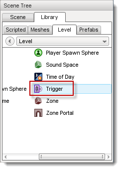
In the Create Object: Trigger dialog, name your trigger
CTNight and select the transitionTrigger datablock,
then click Create New.
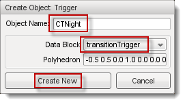
Place the trigger somewhere easy to remember, like in a doorway.
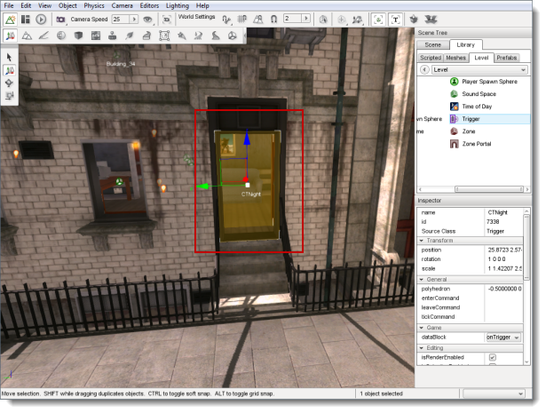
Next, in the Scene Tree, click the Scene tab and scroll down to the bottom of the
Inspector pane edit your trigger's dynamic fields.

Click the green + symbol to add a new Dynamic Field.
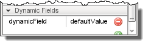
Where it says "dynamicField," type mission and where it says
"defaultValue" type levels\ChinaTown_Dusk.mis.
Add another dynamic field, name it target and set
CTNight as the value.
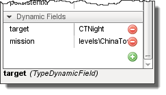
This will set up what we need to land our player at a spawnpoint named "CTNight"
in the ChinaTown_Dusk.mis mission.
Next, we'll create a spawn point here so that we can come back to the day mission
later.
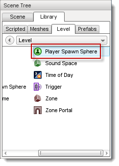
Name it CTDay, then click Create New.
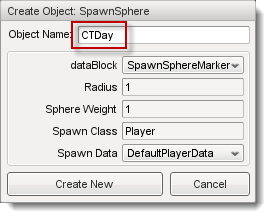
Place it in front of the door facing the street. To do this, with the spawn
sphere selected open the Object menu, select Drop
Location > at Camera w/Rotation and then use Object > Drop
Selection (or CTRL-D ) to place the object.
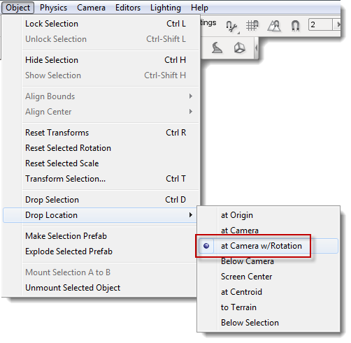
Next, make sure you place it in the PlayerSpawnPoints SimGroup
or you will spawn at the default spawn point:
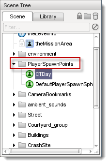
Save your mission file ( CTRL-S ) and open
ChinaTown_Dusk.mis in the World Editor.
Once it opens, create a new trigger, name it CTDay and set the
datablock to transitionTrigger.
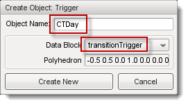
Place it in a doorway to make it easy to remember where it is.
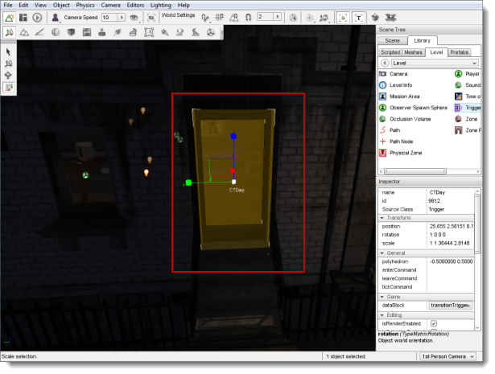
Add a dynamic field named mission and set the value to
levels\ChinaTown_Day.mis. Add a second dynamic field named
target and set the value to CTDay.
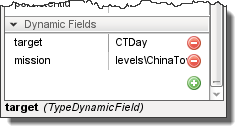
Now, place a spawn point in front of the door facing the street and name it
CTNight.
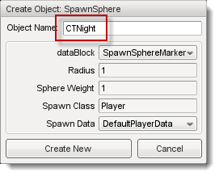
Ensure that the CTNight spawn point is in the
PlayerSpawnPoints SimGroup or you will spawn at the default spawn
point.
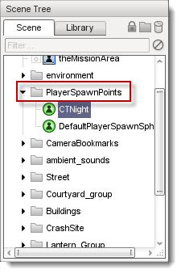
Now we should be ready to test this all out. Save your mission file (
CTRL-S ) and exit the World Editor. Then, from the
Toolbox select your project ( 1 ) and then click Play Game ( 2 ).
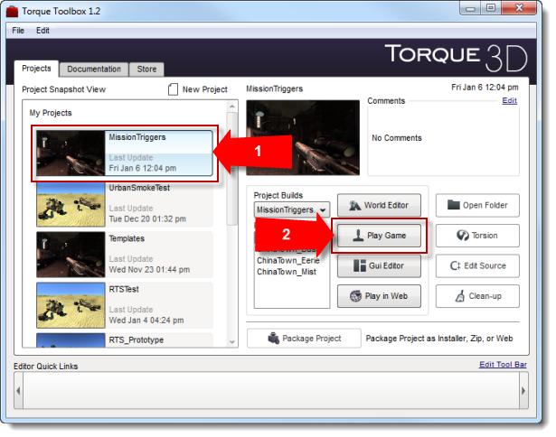
When the main menu appears, choose Multiplayer, Host and then
Start Game.
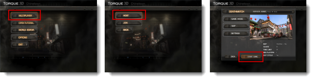
Now simply run through your trigger to transfer to the ChinaTown_Dusk mission,
and then run through your trigger there to come back to ChinaTown_Day.
Conclusion
Now you can transfer from one mission to another using triggers and spawn points.
You could use the mouse interaction methods used in the RTS Prototype article to
make clickable objects that would cause the transfer instead.
|